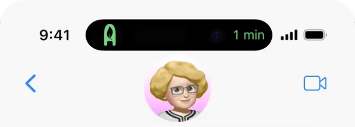
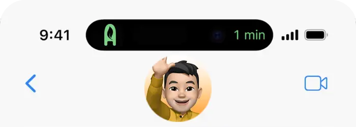

Mirka Resta
- Dr. Bromatología
- Bromatologa Mil Hojas (Fabrica de pastas)
Me complace expresar mi más sincero agradecimiento por la excepcional rapidez y el nivel de profesionalismo demostrado por el equipo de asesoría de Mil Hojas (Fábrica de pastas). Su compromiso en mantener la calidad de nuestros productos, los cuales son una verdadera insignia en la ciudad de Rosario, ha sido admirable.
Me sentí sumamente respaldada en todo momento, sabiendo que contaba con expertos en alimentos que se preocupaban por cada detalle. Estoy agradecida por su enfoque amoroso y dedicado hacia nuestro negocio. Recomendando encarecidamente sus servicios a cualquiera que busque Asesoría de primer nivel en el campo.
Gratitud por asesoría profesional en alimentos.

Alejandro Gibert
- Licenciado en tecnologia de los Alimentos
- Supervisor de calidad de ASSAL
Como Supervisor de Calidad en ASSAL, la seguridad alimentaria y el cumplimiento normativo son aspectos clave de mi responsabilidad. Durante nuestra colaboración con ABR, encontré un equipo altamente competente y comprometido que nos brindó asesoramiento especializado en materia de bromatología.
Desde el principio, ABR surge un conocimiento profundo de los reglamentos y normativas aplicables a nuestra industria. Su enfoque personalizado nos permitió abordar de manera efectiva los desafíos específicos que enfrentamos en ASSAL. Además, su capacidad para adaptarse rápidamente a nuestras necesidades cambiantes.
Seguridad y cumplimiento normativo.